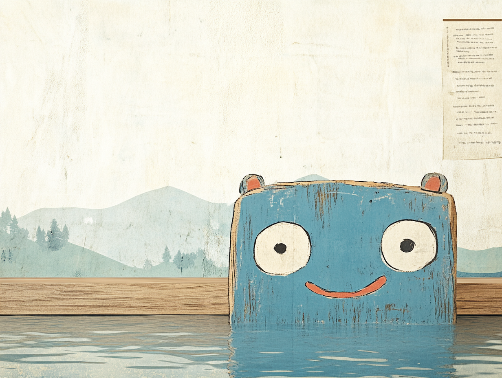
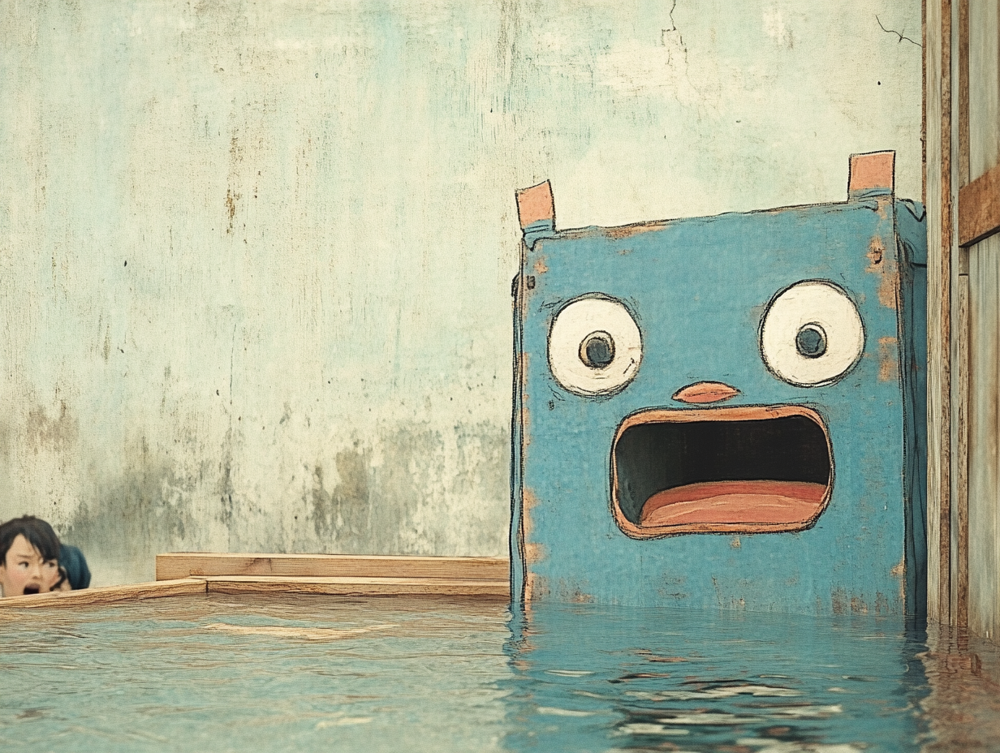
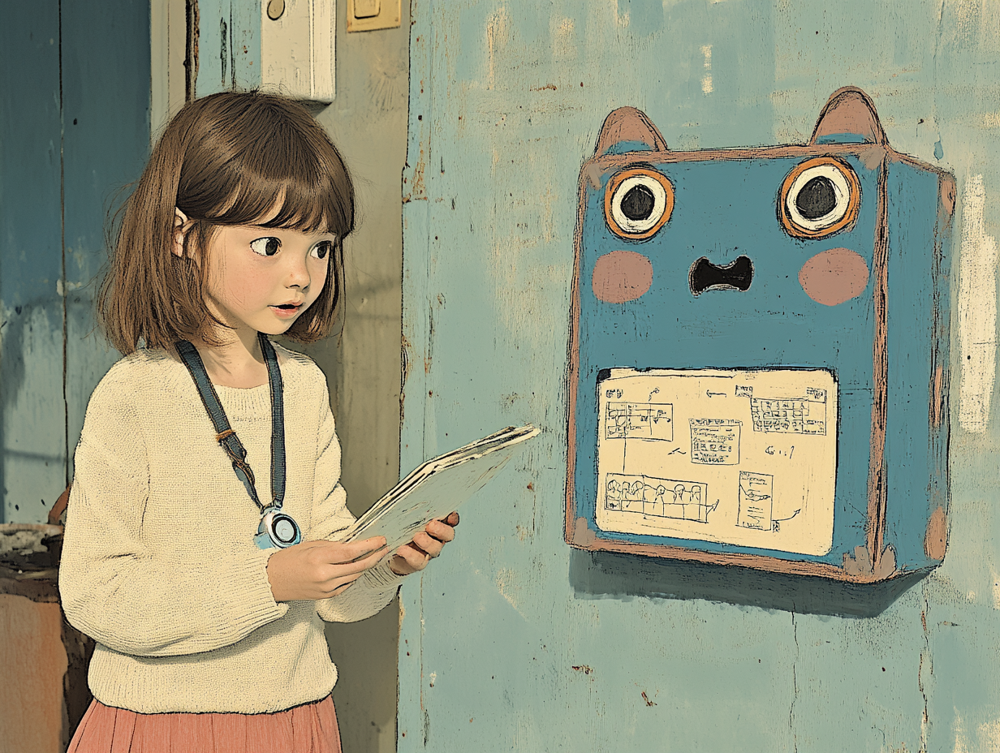
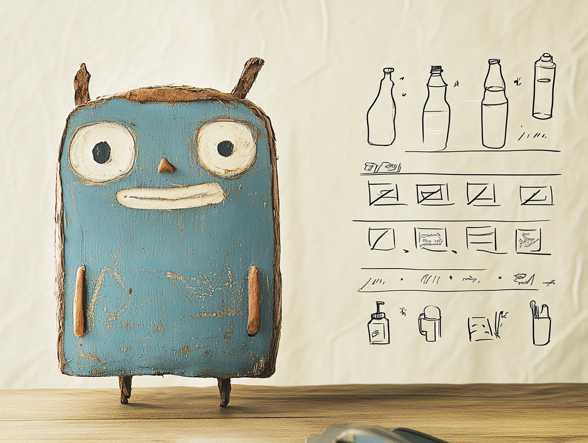

地震くんのやらかし防災日記
📖 第一話：箱根旅行！温泉でのんびりしてたら、地震が…！？
1. のんびり温泉タイム♪
やぁ！地震くんだよ！
この前、箱根に旅行に行ったんだ。温泉でぽかぽか、の～んびりしてたんだよ。
「ふぅ～、気持ちいいなぁ～！」
お風呂にぷかぷか浮かんで、完全にリラックスモード。
でも、そのとき……

2. ぐらぐらっ！！突然の揺れ！
「わわっ！？」
温泉に入っていたら、突然グラグラっと揺れたんだ！
「え！？え！？お風呂で地震ってどうすればいいの！？💦」
焦って立ち上がろうとしたら、
ズルッ！！
「うわぁぁぁ！！！」
足を滑らせて、あやうく湯船にダイブするところだったよ……。

3. そなえちゃんの冷静アドバイス！
そなえちゃんにあとで話したら、
「温泉で地震が起きたら、まずは落ち着くことが大事！」
あわてて立ち上がらない！（転倒の危険！）
揺れが収まるまで、浴槽につかまる
もしすぐに避難が必要なら、タオルで体をふいて、滑らないように！
「なるほど～！！」
お風呂での地震は、パニックになりがちだから、 事前にどうするか考えておくのが大事なんだね！

4. まとめ：「温泉でも備えが大事！」
箱根旅行は楽しかったけど、
「温泉で地震が起きることもある！」ってことを学んだよ。
だから、温泉に入る前に
避難経路を確認する！
もしものときの行動を決めておく！
これが大事だね！
「よ～し！次の旅先でも、ちゃんと備えるぞ！」
……でも、次こそは
「のんびり温泉タイム」を最後まで楽しみたいなぁ～！
😂
♨️
